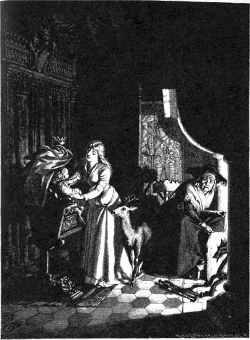

にいさんが妹の手をとって、いいました。
「おかあさんが
死んじゃってから、ぼくたちには、いいことって、ただの一時間もないねえ。こんどのおかあさんたら、まい日まい日、ぼくたちをぶつし、そばへいけば、足でけとばすんだもの。それに、ぼくたちの食べものといえば、食べのこしの、かたいパンの
こばだろう。テーブルの下にいる犬のほうが、ぼくたちよりゃずっとましだよ。おかあさんは、ぼくたちにゃくれなくったって、犬にゃ、ときどき、うまいものをほうってやってるもの。死んだおかあさんがこんなことを知ったら、それこそたいへんだよ。ね、ひろい
世のなかへ、ぼくたちでていこうよ。」
ふたりは、一日じゅう、
草原や、畑や、石っころの上を歩いていきました。雨がふってきますと、小さい妹は、
「
神さまと、あたしたちの心がいっしょになって、
泣いてるのねえ。」
と、いいました。
日がくれるころ、ふたりはある大きな森のなかにはいりこみました。ふたりは、
心配なのと、おなかがへったのと、長いあいだ歩いたのとで、すっかりくたびれていました。それで、とある木の
うろのなかへはいりますと、すぐにねいってしまいました。
あくる朝、ふたりが目をさましたときには、お日さまはもう高くのぼっていて、木のうろのなかまで、かんかんさしこんでいました。そのとき、にいさんがいいました。
「ねえ、ぼくはのどがかわいちゃったよ。
泉のあるところがわかりゃ、いってのんでくるんだけどなあ。おやっ、なんだかさらさらいう水音がきこえるようだよ。」
にいさんは立ちあがって、妹の手をとりました。ふたりは泉をさがしにいこうというのです。
ところが、あのわるい
まま母というのは、じつは、
魔法使いの女だったのです。ですから、ふたりの子どもがにげだしたことも、もうちゃんと知っていて、気がつかれないように、そうっとふたりのあとをつけてきていたのでした。
魔法使いの女というものは、みんな、そんなふうにそうっと歩くものなのです。そして、この女は、森のなかの
泉という泉に、魔法をかけておいたのでした。
ふたりは、小石の上まできらきらわきでている泉を見つけました。まず、にいさんがそれをのもうとしました。ところがそのとたんに、さらさらいっている水音のなかから、
わたしの水をのむものは トラになる
わたしの水をのむものは トラになる
という声が、妹の耳にきこえてきました。妹はあわててさけびました。
「おねがい、おにいさん。のんじゃいけないわ。のむと、おにいさんはおそろしいけだものになって、あたしを八つざきにしてしまうわ。」
にいさんは、のどがひどくかわいていましたけれども、がまんして、その水をのみませんでした。そして、こういいました。
「このつぎの
泉まで
待つことにするよ。」
ふたりが二ばんめの泉にきますと、この泉も、
わたしの水をのむものは オオカミになる
わたしの水をのむものは オオカミになる
といっているのが、妹の耳にきこえました。そこで、妹は、また大きな声でさけびました。
「おにいさん、おねがいだから、のまないで。のむと、おにいさんはオオカミになって、あたしを食べちゃうわ。」
にいさんは、その水をのまないでいました。そして、こういいました。
「このつぎの
泉にいくまで待つよ。だけど、こんどはおまえがなんていったって、のむからね。もう、のどがかわいてかわいて、たまらないんだ。」
やがて、ふたりは三ばんめの泉にきましたが、こんどもまた、妹の耳には、さらさらいう水音のなかから、
わたしの水をのむものは シカになる
わたしの水をのむものは シカになる
という声がきこえてきました。妹は大声にいいました。
「ああ、おにいさん、おねがいだから、のまないで。のむと、おにいさんはシカになって、にげていっちゃうわ。」
けれども、にいさんは、こんどはすぐにひざをつくと、かがみこんで、水をのみはじめました。水のしずくが、ほんのいくたらしか、にいさんのくちびるについたかと思うと、たちまち、にいさんは子ジカのすがたにかわってしまいました。
妹は、
魔法をかけられた、この気のどくなにいさんのことを思って、しくしく
泣きだしました。子ジカも泣きながら、かなしそうに、妹のそばにすわっていました。とうとう、女の子はいいました。
「じっとしていらっしゃいよ、子ジカちゃん。あたし、どんなことがあっても、あなたをすてやしなくってよ。」
女の子は、じぶんの
金のくつしたどめをはずして、それを子ジカの首のまわりにかけてやりました。それから、トウシングサをむしりとって、それでやわらかいなわをあみました。
女の子はそのなわで、かわいい子ジカをゆわえました。そして、子ジカをひっぱって、森のおくふかくへはいっていきました。
それから、ふたりはずいぶん長いこと歩きました。とうとう、ふたりは、一
軒の小さな家のそばにきました。女の子がなかをのぞいてみますと、家のなかにはだれもおりません。それで、女の子は、
（このうちなら、いつまでも住んでいられるわ。）
と、思いました。
そこで、女の子は、子ジカのために、
木の
葉やコケをさがしてきて、やわらかい
寝床をこしらえてやりました。
女の子は、まい朝、そとへでていっては、草の
根や、
汁のおおい
実や、クルミのようにかたい実を、たくさんあつめてきました。それから、子ジカには、やわらかい草をいっしょにとってきてやりました。子ジカはその草を女の子の手から食べると、大よろこびで、女の子のまえであそびまわりました。
日がくれるころには、妹はすっかりくたびれて、おいのりをすませますと、すぐに、頭をかわいい子ジカの
背中にのせました。子ジカの背中が、ちょうどまくらになるのです。そして、妹はそのまますやすやとねいってしまうのでした。これで、もしにいさんが人間のすがたでいてくれさえすれば、どんなにかたのしい
生活だったことでしょう。
こんなふうに、にいさんと妹とは、ずいぶん長いあいだ、この
荒れ
野のなかに、ふたりきりでくらしていました。
ところが、あるとき、この国の王さまが、この森のなかで大きな
狩りをもよおしたことがありました。
角笛のひびき、犬のほえ声、
狩人たちのたのしそうなさけび声が、木ぎのあいだにひびきわたりました。
子ジカはそれをききますと、そこへいきたくてたまらなくなりました。
「ねえ、
狩りにやっておくれよ。」
と、子ジカは妹にいいました。
「もうとてもがまんができないんだ。」
こういって、子ジカはいつまでもいつまでもたのみましたので、とうとう、妹も
承知してしまいました。
「でもね。」
と、妹はいいました。
「夕がたには、きっとかえってきてよ。らんぼうな
狩人たちがはいってこないように、あたし、戸をしめておくわ。だから、おにいさんだってことがわかるように、戸をたたいて、妹や、いれておくれっていってちょうだい。おにいさんがそういわなければ、戸はあけなくってよ。」
子ジカは、そとへとびだしました。ひさしぶりに、ひろびろとしたところへでたものですから、子ジカはほんとうに気持ちがよく、うれしくってたまりませんでした。
王さまと王さまの
狩人たちは、この美しい動物を見つけますと、すぐさまあとを
追いかけました。けれども、どうしても追いつくことができません。こんどこそだいじょうぶ、と思ったときには、子ジカはしげみをとびこして、どこかへすがたをけしてしまっていました。
あたりがくらくなったころ、子ジカは家へかけもどってきて、戸をたたいて、
「妹や、いれておくれ。」
と、いいました。
すると、すぐに戸があいて、子ジカはなかにとびこみました。そして、ひと
晩じゅう、じぶんのやわらかい
寝床のなかでゆっくりやすみました。
あくる朝になりますと、また
狩りがはじまりました。子ジカは、ふたたび、
角笛のひびきや、ホウ、ホウという
狩人たちのかけ声を耳にしますと、じっとしていられなくなりました。そして、
「ねえ、おまえ、あけておくれよ。ぼくはもう、そとへでないじゃいられないんだ。」
と、妹にいいました。
妹は戸をあけてやって、こういいきかせました。
「でも、
晩にはきっとかえってきてよ。そうして、あの
約束のことばをいってね。」
王さまと王さまの
狩人たちは、またまた
金の
首輪をした子ジカを見かけますと、みんなであとを
追いました。けれども、子ジカがあんまりはやくて、すばしこいので、どうすることもできませんでした。
一日じゅうこうやって追いまわしていましたが、日がくれてから、やっと、
狩人たちは子ジカをとりまくことができました。そして、狩人のひとりが、子ジカの足にちょっとした
傷をおわせましたので、子ジカは足をひきずりはじめました。そして、まえよりもかけかたがずっとおそくなりました。
そのおかげで、ひとりの
狩人が、子ジカのあとを、家までこっそりつけていくことができました。子ジカは家のまえまできますと、「妹や、いれておくれ」と、さけびました。そうすると、すぐに戸があいて、またもとのようにしめられました。狩人は、それをちゃんとじぶんの耳できき、じぶんの目で見とどけました。
狩人は、それをすっかりおぼえておいて、王さまのところへもどりました。そして、じぶんの見たことやきいたことを、のこらずお話ししました。すると、王さまは、
「あす、もういちど
狩りをすることにしよう。」
と、いいました。
ところで、妹は、子ジカがけがをしているのを見ますと、たいそうびっくりしました。それで、いそいで、子ジカの
血をあらいおとして、
薬草をはってやりました。そして、
「あなたのお
寝床へいらっしゃい、子ジカちゃん。そうすりゃ、なおってよ。」
と、いいました。
けれども、けがはほんのかすり
傷でしたので、子ジカは朝になると、もうなんともなくなりました。そのうちに、
狩りのさわぎがまたもやきこえてきますと、子ジカはいいました。
「もう、がまんができない。ぼくはいかなくちゃならないんだ。そんなにあっさりつかまりゃしないよ。」
すると、妹は
泣くなく、いいました。
「こんどこそ、みんなに
殺されちゃうわ。そしたら、あたしは、こんな森のなかでひとりぼっちになって、だあれもかまってくれる人がなくなっちゃうのよ。あたし、おにいさんをだすのは、いや。」
「それじゃ、ぼくはかなしくって、ここで
死んでしまうよ。」
と、子ジカはこたえました。
「あの
角笛をきくとね、いても立ってもいられないみたいなんだ。」
妹も、こういわれては、どうしようもありません。いやいやながら、戸をあけてやりました。すると、子ジカは元気よく、うれしそうに、森のなかへとびだしていきました。
王さまは、子ジカのすがたを見かけますと、
狩人たちにいいつけました。
「さあ、あれを、夜になるまで、一日じゅう
追いかけるのだ。だが、
傷をおわせてはならんぞ。」
お日さまがしずむのを
待って、王さまはあの狩人にもうしました。
「さあ、いっしょにきて、わしにその森の
小屋をおしえてくれ。」
王さまは小さな戸のまえにきますと、戸をたたいて、
「妹や、いれておくれ。」
と、大きな声でいいました。
すると、戸があきましたので、王さまはなかにはいりました。なかにはひとりの女の子が立っていました。ところが、その女の子の美しいことといったらびっくりするほどで、王さまも、いままでに、これほどきれいな子は見たことがありませんでした。
女の子は、子ジカではなくて、頭に
金のかんむりをかぶった男の人がはいってきたものですから、すっかりびっくりしてしまいました。けれども、王さまは女の子をやさしく見ながら、手をさしのべて、いいました。
「わしといっしょに
城へいって、
妻になる気はないかな。」
「はい、そうさせていただきます。」
と、女の子はこたえました。
「ですが、子ジカもいっしょにつれていくのでなければ、いやでございます。あれをおいていくことはできません。」
すると、王さまがいいました。
「おまえの生きているかぎり、子ジカはおまえのそばにおくがよい。あれにもけっして
不自由はさせぬ。」
そこへ、子ジカがとびこんできました。女の子は、またトウシングサのなわで子ジカをゆわえると、そのなわのはしをにぎって、子ジカをひっぱりながら、森の家からでていきました。
王さまは、この美しい女の子をじぶんの馬にのせて、お城へつれていきました。
お
城では、目もさめるほどりっぱなご
婚礼の式があげられました。こうして、女の子はいまではお
妃さまになりました。
そして、王さま、お妃さまは、それから長いあいだたのしくくらしました。子ジカもみんなにたいへんかわいがられて、お城のお
庭をとびまわっていました。
ところで、この子どもたちが、ひろい
世のなかへでていかなければならないようにしむけた、わるい
まま母がいましたね。あのまま母は、妹は森のなかでおそろしいけものにくわれてしまい、にいさんのほうは子ジカになって、
狩人たちに
射殺されてしまったものとばかり思いこんでいました。ところが、そのふたりが、たいそうしあわせにくらしていることをききますと、まま母の
胸のうちには、ねたましい気持ちがむらむらとわきおこってきました。そして、それからは、ちっともおちつくことができなくなりました。そして、どうしたら、あのふたりをひどいめにあわせてやれるだろうかと、そんなことばかり考えるようになりました。
まま母のほんとうのむすめというのは、まるで夜のようにみにくくて、目がひとつしかありません。このむすめがおかあさんをののしって、
「お
妃になる
幸運は、あたしにさずけてくれるはずじゃなかったの。」
と、いいたてました。
「まあ、だまっといで。」
と、まま母はこたえて、とくいそうにこういいました。
「時がくりゃ、ちゃあんと、あたしにうまい考えがあるのさ。」
そのうちに、お
妃さまは美しい男の子を生みました。
いっぽう、
魔法使いのまま母は、王さまが
狩りにでかけて、るすなのを見すましますと、
侍女のすがたになって、お妃さまのねているへやにはいっていきました。そして、まだからだのよわっているお妃さまに、
「さあ、おいでくださいまし。おふろのしたくができました。おふろはおからだのためによろしゅうございますし、力もおつきになります。さあさ、さめないうちに、おはやくどうぞ。」
と、もうしました。
むすめもそばにおりました。ふたりはよわりきっているお
妃さまを
湯殿につれこんで、湯ぶねのなかにいれました。そうしておいて、ふたりは戸をしめると、さっさとにげてしまいました。
ところが、
湯殿のなかには、ほんとうに
地獄のようにおそろしい火がおこしてあったものですから、美しいわかいお妃さまは、たちまち
息がつまって、
死んでしまいました。
こんどは、まま母はむすめをつれていって、ぼうしをかぶせ、そうして、お妃さまのかわりにベッドにねかせました。そのうえ、まま母は、むすめにお
妃さまのすがた、かっこうまでもさずけました。
けれども、なくなったひとつの目だけは、どうしても、もとどおりにしてやることができませんでした。それで、王さまにこのことを気づかれないようにするため、むすめは目のないほうを下にしてねなければなりませんでした。
夕がた、王さまがお
城にかえってきて、男の子が生まれたことをききますと、それはそれはよろこびました。そして、さっそく、お
妃さまの
寝床のところへいって、どんなようすか見ようとしました。
ところがそのとたんに、まま母があわててさけびました。
「およしくださいませ。お
寝床のカーテンは、おしめになっておいてくださいませ。お妃さまはまだ光をごらんにならないほうがよろしゅうございます。いまは、しずかにしていらっしゃらなければいけないのでございます。」
そういわれて、王さまはもどってきました。まさか、にせもののお妃がベッドにねていようなどとは、
夢にも知らなかったのです。
ま
夜中ごろになりました。みんなねしずまってしまいましたが、
乳母だけは、子どもべやのゆりかごのそばにすわって、まだ目をさましていました。そのとき、ふと見ますと、戸があいて、ほんとうのお
妃さまがはいってきました。
お妃さまは赤ちゃんを
両腕にだきあげて、お
乳をのませました。それから、小さなまくらをふるってふくらませますと、また赤ちゃんをゆりかごのなかにねかして、かわいらしいかけぶとんをかけてやりました。
お妃さまは子ジカのこともわすれませんでした。子ジカのねているすみのところへいって、やさしく
背中をさすってやりました。そうして、ひとことも口をきかずに、そのまま、もとの戸口からでていってしまいました。

乳母は、あくる朝、夜のあいだにだれかお
城へはいってきたものはないかと、
番兵にたずねてみました。ところが番兵は、
「いいえ、だれも見かけませんでした。」
と、こたえました。
お
妃さまは、こんなふうに、いく
晩もいく晩もやってきましたが、ひとことも口をきいたことがありませんでした。
乳母は、いつもお妃さまがそうするのを見ていたのですが、思いきってそれをだれかにいう
勇気はありませんでした。
こうして、しばらくたったある晩のこと、お妃さまはこんなことをいいだしました。
ぼうや なにしてるの
シカちゃん なにしてるの
あたしがくるのは あと二度っきり
それで もうこられないのよ
乳母はお妃さまにへんじをしませんでした。でも、お妃さまのすがたがきえてしまいますと、すぐに王さまのところへいって、いままでのことを、のこらずお話ししました。
「ああ、なんということだ。今夜は、わしが子どものそばにおきているとしよう。」
王さまはこういいました。
その
晩、王さまは子どもべやにきました。すると、ま
夜中にお
妃さまがまたすがたをあらわして、いいました。
ぼうや なにしてるの
シカちゃん なにしてるの
あたしがくるのは あといちどっきり
それで もうこられないのよ
それから、いつものように、子どもの
世話をして、すがたをけしてしまいました。
王さまは、思いきってお
妃さまに話しかける
勇気がありませんでした。でも、つぎの
晩もおきて、
番をしていました。すると、お妃さまはまたこういいました。
ぼうや なにしてるの
シカちゃん なにしてるの
あたしがくるのは 今夜っきり
これで もうこられないのよ
王さまは、もうこれいじょうがまんしていることができません。お妃さまにとびかかって、
「おまえは、わしの
妻にちがいない。」
と、いいました。
すると、お
妃さまは、
「はい、あたくしはあなたの
妻でございます。」
と、こたえました。
しかもそのとたんに、
神さまのおめぐみで、お妃さまは生きかえりました。もとのようにいきいきとして、顔色もよくなり、じょうぶなからだになったのです。それから、お妃さまは王さまに、あのわるい
魔法使いの女とむすめとが、じぶんにたいしてやったひどいおこないのことを話しました。
王さまはふたりを
裁判所につれてこさせました。そこで、ふたりに
罪がいいわたされました。
むすめのほうは森のなかにつれていかれ、おそろしいけもののために八つざきにされてしまいました。
魔法使いの女のほうは、火のなかへねかされて、みるもむざんに
焼け
死んでしまいました。そして、この女がもえて
灰になったとき、あの子ジカはもとの人間のすがたにもどりました。
妹とにいさんとは、それからこの
世をさる日まで、しあわせにいっしょにくらしました。